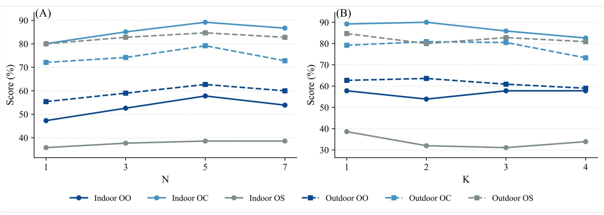
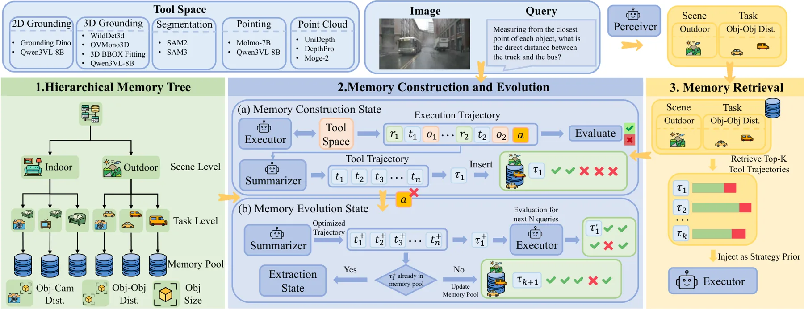
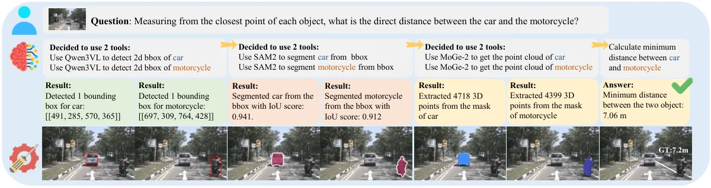

SpatialMem：带分层记忆的定量空间推理智能体
SpatialMem: Building Quantitative Spatial Reasoning Agents with Hierarchical Memory
一句话：把「哪个几何工具、按什么顺序用」存成场景-任务两层经验，冻结 VLM 检索后执行，不再每次从零试错。
success rate
success rate
far-range
作者、单位与技术谱系 · Research context
作者与单位
研究脉络
- SpatialRGPT / SpatialVLM方法基座关系：把空间推理做成 VLM 的视觉问答能力；SpatialMem 不走训练路线，而是在其外挂工具与记忆。[SpatialMem 原文 §2]
- VADAR / SpatialPIN方法上游关系：免训练工具增强空间推理，但每个功能绑定单一专家或固定流水线；SpatialMem 让专家选择可变。[SpatialMem 原文 §2]
- ReasoningBank / ReMe方法上游关系：通用 agent 记忆与经验进化；SpatialMem 把记忆结构改成场景-任务两层并加轨迹级进化。[SpatialMem 原文 §5]
合作网络
- HKUST(GZ) × 腾讯混元HKUST (Guangzhou) → HY Foundation Model Team, Tencent关系：共同署名[arXiv 摘要页]
- SpatialMem → 官方仓库SpatialMem → github.com/compasszzn/SpatialMem关系：官方仓库[SpatialMem 官方仓库]
作者与单位来自论文首页；记忆与工具路线来自相关工作章节；代码关系来自摘要中的官方仓库链接；未发现公开的师生关系证据。
方法本质拆解 · What actually changed
是不是微调？
不训练 VLM，也不训练工具模型；框架冻结执行器、感知器和 summarizer，只更新外部记忆池。离线模式先在训练集上积累经验，在线模式按执行反馈增量写入。
有没有额外约束？
记忆被硬性分区到室内/室外与三类任务，每个池子同时最多一个「进化中」轨迹，避免未验证策略互相干扰。轨迹按经验均值排序检索，失败轨迹要经过诊断和 N 次试用才能转正。
推理/后端到底做了什么？
推理时先用感知模型判定场景-任务类别，检索 top-K 工具链作为上下文，VLM 执行器逐步调用分割、检测、深度、点云等工具，最后输出数值答案。没有梯度更新，也没有对工具参数的联合优化。
方法本质是什么？
本质是把「选哪个几何专家、按什么顺序调用」变成可检索的经验，而不是让 VLM 每次从零试错。它改变的是工具选择的不确定性，靠分层记忆缩小搜索空间，并用失败驱动进化修正次优链路。
输入是一张图和数值空间问题，先路由到场景-任务记忆池，检索高成功率工具链交给冻结 VLM 执行；改变的是工具编排的试错成本，靠分层经验与失败进化把选择收敛。

桥接价值Bridge
桥接价值
SpatialMem 把「定量空间推理」从单次 VLM 问答变成可积累的工具编排问题：同一类距离/尺寸问题，不同场景、不同工具组合的成功率差异很大，记忆可以替代重新训练。它桥接的是 3D 几何工具（深度、分割、点云）与语言智能体之间的选择层，对具身系统里「何时调用哪个几何专家」有直接参考。
方法与模块Method
方法摘要
记忆按「室内/室外」和「物-物距离/物-相机距离/物体尺寸」分成两层池子，每个场景-任务对独立检索，避免跨域干扰。执行轨迹成功时把工具序列写入 construction memory；失败时由 summarizer 诊断并生成替代序列，在接下来 N 次查询里强制试用，再按经验均值决定是否并入。检索时取 top-K 高准确率轨迹作为策略先验，交给冻结的 VLM 执行器调用工具。
可迁移模块
第一是「按场景-任务分池」的记忆结构，比单一全局经验库更能避免室内深度先验污染室外。第二是失败轨迹的「诊断-替换-限时试用」机制，它把一次性失败转成可验证的候选策略，而不是直接丢弃。第三是 MetricBench 的分层采样与可见性过滤，可用于我们自己的距离/尺度评测，避免短距离样本主导。

证据Evidence
关键证据与数字
MetricBench 离线设置下，SpatialMem 室内平均 61.8%、室外 75.5%，无记忆 agent 为 49.0%/68.9%，最强记忆基线 ReasoningBank 离线为 52.0%/67.0%。QSpatial-ScanNet 的物-物距离从最佳基线 41.2% 提到 69.6%，SpatialRGPT 宽度从 57.9% 提到 84.2%、垂直距离从 63.2% 提到 81.1%；远距离物-相机估计仍保持 75% 以上，而 RoboRefer 从近距 84.5% 掉到远距 12.0%。
边界与下一步Limits & Next Step
边界与风险
作者明确限制是记忆类别预定义为室内/室外与三类任务，难以直接迁移到非空间或纯文本长程任务；记忆进化依赖足够交互与可靠反馈。我们的待核验项：执行器是 GPT-5.4-Nano，换成开源 VLM 后工具调用稳定性未知；在线 VLM 反馈会让所有记忆方法变差，说明自评不可靠；评测是静态 QA，不是闭环机器人；658 题 MetricBench 的规模仍偏小，室内外分布与真实部署差异未量化。
下一步实验
最小实验是在我们现有的深度/位姿工具池上复刻两层记忆：场景分为室内/室外/隧道，任务分为深度、尺度、位姿，记录每次工具组合的成功率，比较「无记忆 / 全局记忆 / 分层记忆」在误差与调用次数上的差异。第二个实验是把失败诊断接到真实传感器退化场景（弱纹理、雨雾），看记忆是否能学会换工具而不是重复失败。

